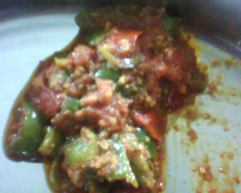

चौंक गए ना ऐसा अजीबोगरीब शीर्षक पढ़ कर.. !
पिछले साल खाना बनाने के कटु अनुभव के बाद सोच लिया था कि इस बार पहले से ही तैयारी कर लेनी पड़ेगी, और हर्ष भी इस बार गाँव नहीं जाने की जिद कर रहा है। सो हम दोनों के पेट का बंदोबस्त तो करना ही होगा। सो इस बार पूर्व तैयारी के चलते यदा कदा सब्जी वगैरह बनाता रहता हूं। कई सब्जियों में तो अच्छी खासी मास्टरी हो गई है। 

परसों जो सब्जी घर में बनी थी वो जरा कम पसन्द होने की वजह से मैने शिमला मिर्च बनाने का निश्चय किया। तिल, नारियल, मूंगफली और खसखस की बढ़िया ग्रेवी और फिर टमाटर प्यूरी आदि डाल कर एकदम बढ़िया सब्जी बना ली।
सब्जी जब बनने को आई तो मैने मसाले चखने के लिहाज से एक चम्मच सब्जी, गैस के पास की खिड़की में में रखी कटोरी में ले ली, और जैसे ही चखने के लिये उसे उठाया तो उसमें थोड़ा पानी दिखा। मैने सोचा पानी से मसाले का सही पता नहीं चलेगा सो मैने उस कटोरी वाली सब्जी को पानी सहित कढ़ाई में डाल कर हिला दिया। तभी अचानक मुझे सब्जी में से कुछ अजीब सी गंध आने लगी। श्रीमती जी को बुलाया तो उन्हें भी उस अजीब सी गंध से आश्चर्य हुआ। तभी पास में रखी कटोरी को देख कर पूछा इसमें सब्जी कैसे आई? मैने कहा मैने चखने के लिए ली थी पर उसमें पानी था इसलिये मैने वापस कढ़ाई में डाल दी।
श्रीमती जी अपने सर पर हाथ रख कर बोली है भगवान! ये आपने क्या किया? ( भगवान मुझे नहीं कहा था  ) मैने पूछा क्यों क्या हुआ?
) मैने पूछा क्यों क्या हुआ?
उन्होने कहा अरे! आज सुबह पेराशूट जास्मीन हेर ऑइल के दो पाऊच खॊले थे और पाउच में बहुत सा तेल दिख रहा था सो पाऊच को इन पर उल्टा रख दिया था जिससे धीरे धीरे तेल इस कटोरी में जमा हो जाये। मैने कहा जब मैने देखा था तब खाली पाऊच नहीं थे तो उन्होने कहा उन्हें तो अभी पांच मिनिट पहले ही मैने कचरे में डाले थे और कटोरी को बॉटल में खाली करने जा ही रही थी कि सब्जी वाला आ गया तो पहले सब्जी लेने चली गई……
अब इतनी मेहनत से बनाई सब्जी को फेंकने की हिम्मत जुटाने से पहले सोचा एक चम्मच खा कर देखने में क्या हर्ज है शायद खाने लायक हो!
बस यहां से एक नई परेशानी हो गई। मैने फुलके (रोटी) का एक कौर तोड़ कर सब्जी के साथ खाया कि उबाईयां आने लगी…उल्टी होते होते बची। सब्जी में से जास्मीन तेल की गंध….!!! उधर गैस चालू था और सब्जी में तेल मिक्स हो कर पूरे घर में जास्मीन तेल की महक आने लगी। पूरे दिन जास्मीन तेल की दकारें आती रही । आज उस बात को तीन दिन हो गये हैं पर मेरे दिमाग में से वो गंध नहीं निकल रही घर में. खासकर रसोई में तो जाना भी दु:भर सा हो गया है। घर में कोई सिर में जास्मीन तेल लगाता है तो मैं बैचेन हो जाता हूं।
आखिरकार इतनी मेहनत से बनाई सब्जी अपने ही हाथों से फेंक देनी पड़ी। भगवान ये मेरे साथ ही क्यों होता है?